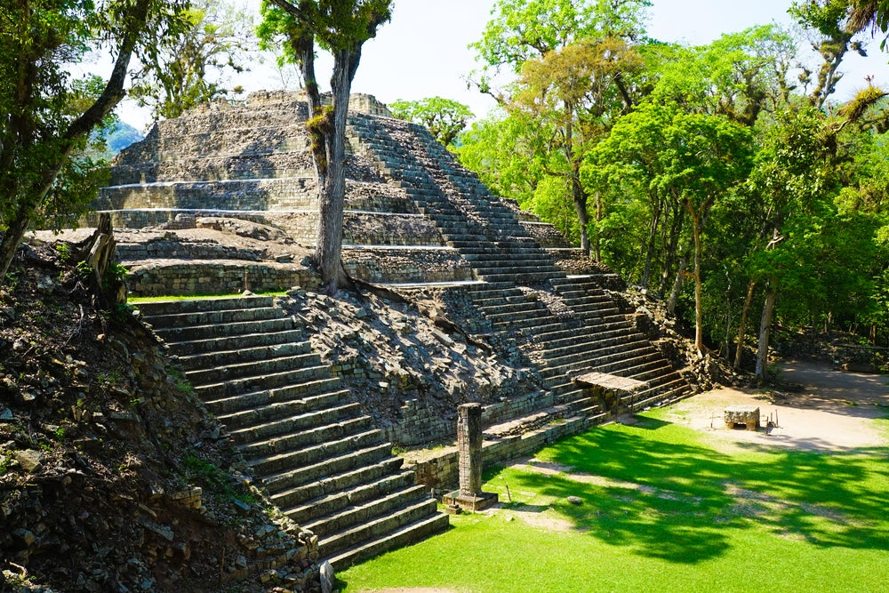
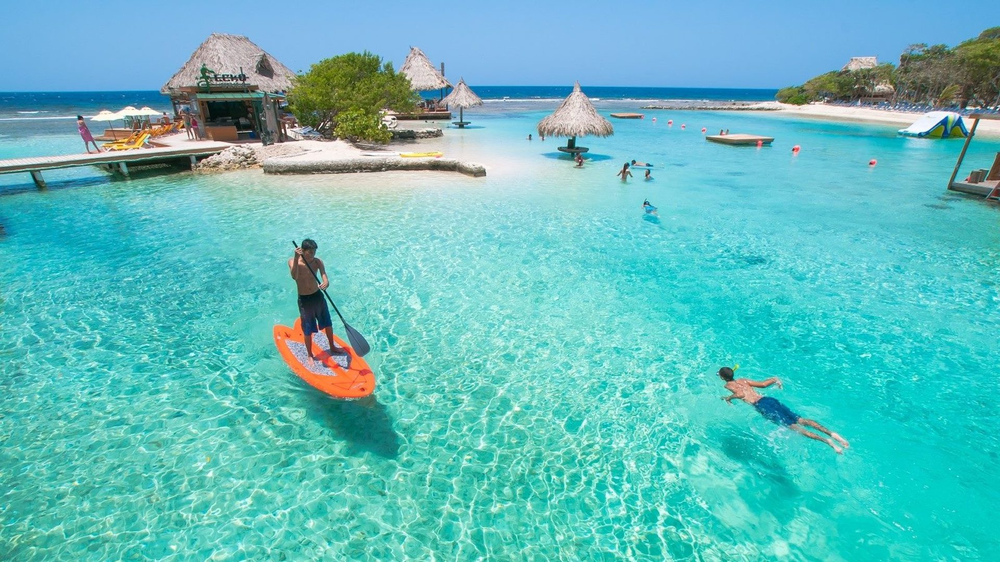

Tierra de historia, selva y mar. Libre, soberana e independiente.
Destinos emblemáticos
Tres lugares que no te puedes perder.
Parque Arqueológico de Copán Ruinas

Copán Ruinas, Copán
Copán Ruinas es un destino turístico ubicado en el occidente de Honduras, famoso por sus antiguas ruinas
mayas, declaradas Patrimonio de la Humanidad por la UNESCO. Destaca por su riqueza histórica, sus hermosos
paisajes y sus tradiciones culturales, convirtiéndose en un lugar ideal para conocer la historia y la belleza
de Honduras.
Islas de la Bahía

Islas de la Bahía,Roatan
Islas de la Bahía es un hermoso destino turístico ubicado en el mar Caribe de Honduras, famoso por sus playas de
arena blanca, aguas cristalinas y arrecifes de coral. Es ideal para practicar buceo, snorkel y disfrutar de la
naturaleza, convirtiéndose en un lugar perfecto para vivir una experiencia inolvidable.
Parque Nacional La Tigra
Parque Nacional La Tigra, Francisco Morazán
El Parque Nacional La Tigra es una reserva natural ubicada cerca de Tegucigalpa, famosa por sus bosques nublados,
su abundante biodiversidad y sus hermosos senderos. Es un destino ideal para practicar senderismo, observar aves
y disfrutar de la naturaleza.
Conoce Honduras
Descubre la riqueza natural y cultural de nuestro país.
Ubicación geográfica
Honduras está ubicada en América Central,con costas en el mar Caribe y el océano Pacífico, a través del golfo de Fonseca.
Biodiversidad
Posee bosques tropicales, manglares,arrecifes de coral y especies como la guacamaya roja y el jaguar.
Clima
Su clima es principalmente tropical,con una temporada lluviosa y otra seca.
Moneda
La moneda oficial es el lempira hondureño,representado por el símbolo L.